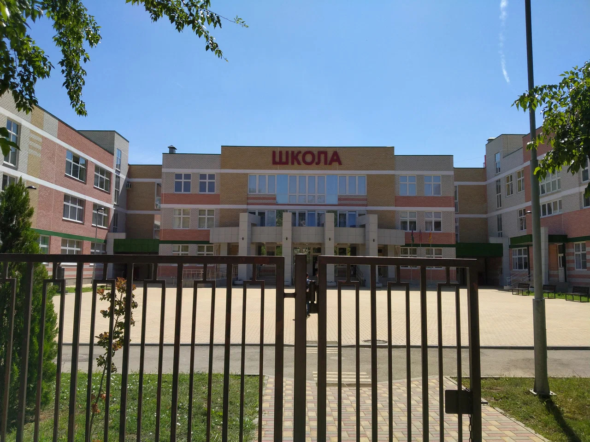

Добро пожаловать на сайт Муниципального автономного общеобразовательного учреждения города Краснодара - Средней общеобразовательной школы № 104!
Наша школа - это место, где каждый ученик может реализовать свой потенциал и получить качественное образование. Мы предлагаем образовательную программу, которая соответствует современным требованиям и стандартам. Наш коллектив - это команда профессионалов, готовых помочь каждому ребенку в реализации его целей и задач. Мы предлагаем ученикам множество интересных и разнообразных мероприятий: спортивные соревнования, творческие конкурсы, экскурсии и многое другое.
В школе установлена дружеская и спокойная атмосфера, что способствует формированию здорового и сильного коллектива. Мы убеждены, что важным элементом образования является индивидуальный подход к каждому ребенку. Наши учителя тесно сотрудничают с родителями и стараются обеспечить оптимальные условия для развития и обучения каждого ребенка.
Мы всегда поддерживаем инициативы, направленные на развитие и профессиональное обучение наших учеников. Мы считаем, что образование должно быть не только теоретическим, но и практическим, и мы готовы предоставить нашим ученикам все возможности для реализации их потенциала.
Спасибо за ваш интерес к нашей школе. Если у вас есть какие-либо вопросы, пожалуйста, не стесняйтесь обращаться к нам по предложенным ниже контактам. Мы всегда рады помочь!
Контактная информация:
EMAIL: school104@kubannet.ru
Телефон: 8(861)992-44-61